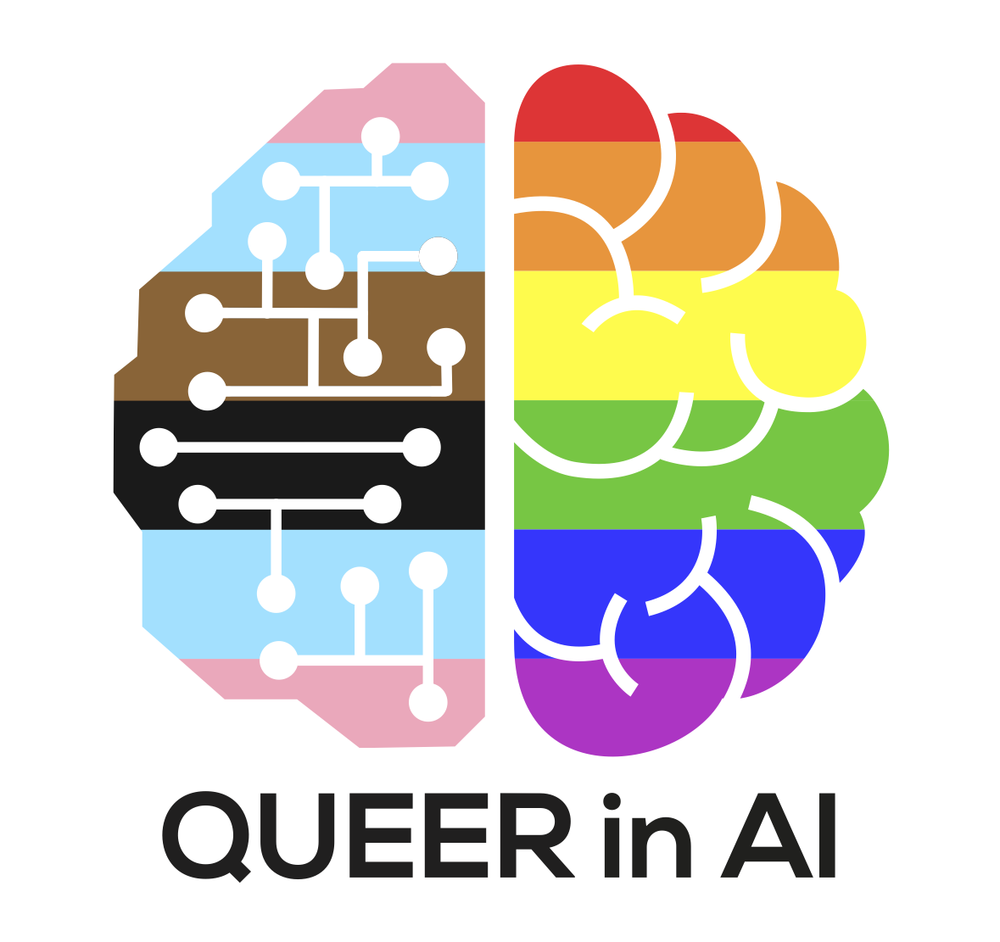

|
I am Pranav and I am currently working as a PhD researcher. I graduated from Hong Kong University of Science and Technology studying Big Data Technology. My email is cs.pranav.a (at) gmail.com. |

Research Interests and PublicationsBroadly, my interests are in NLP (Natural Language Processing) and AI ethics. In the realm of NLP, my particular focus revolves around tokenization learning and multilinguality. Currently, my work centers on developing subword models in multilingual tasks, with a specific emphasis on addressing the following issues:
Regarding AI ethics, my main areas of interest include conference inclusivity, queerness in AI, and data sovereignty. Presently, my research efforts are concentrated on the following topics:
|
|

|
Authors: Organizers of QueerInAI (several awesome authors including me!) Conference: FAccT, 2023 Best Paper Award arXiv Community-led participatory design case study of Queer in AI contributed lessons on decentralization, building community aid, empowering marginalized groups, and critiquing poor participatory practices. |
|
|
Authors: Organizers of QueerInAI, A Pranav, MaryLena Bleile, Arjun Subramonian, Luca Soldaini, Danica J. Sutherland, Sabine Weber and Pan Xu Conference: Widening NLP, 2021 Link to Queer in AI page Queer in AI provides a tutorial for diversity & inclusion organizers on making virtual conferences more queer-friendly through inclusivity based on their community's experiences with marginalization. |
|
|
Authors: Pranav A, Isabelle Augenstein Conference: ACL, 2020 Github Link / SIGTYP Newsletter Link / arXiv Link / Video and Slides Link The paper contributes a contextual subword segmentation method along with benchmark datasets that outperformed previous Chinese character conversion approaches by 6 points in accuracy, especially for code-mixing and names entities. |
|
|
Authors: Pranav A Conference: ACL Student Research Workshop, 2018 Github Link / ACL Anthology Link The paper contributes information retrieval ranking functions with heuristics like positional tokenization and graphical error modelling to the problem of cognate detection. |


Volunteer Service and D&I Advocacy
Over the past few years, I have devoted a significant amount of time to volunteering for queer and D&I advocacy, particularly within NLP conferences.
I have served as a senior D&I chair for NAACL 2021 and 2022. In this role, my responsibilities encompassed the establishment of grassroots organizations, the implementation of mentoring programs, the promotion of trans-inclusive publishing, and improving financial accessibility.
As an initiator of the Queer in AI initiative within the NLP community, I have organized workshops (NAACL 2021 and NAACL 2022) and social events at each NLP conference. At Queer in AI, my research focuses on enhancing queer inclusivity in conferences, and I also mentor several volunteers in the field of queer activism.